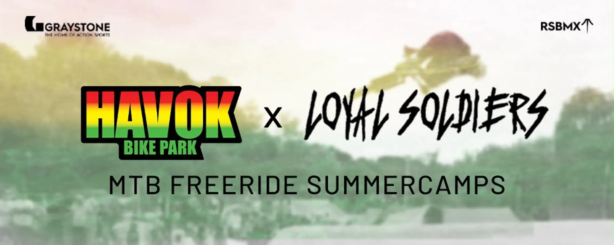
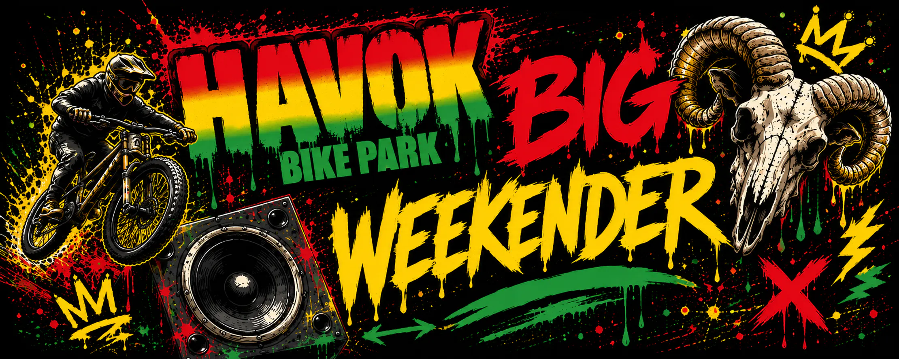
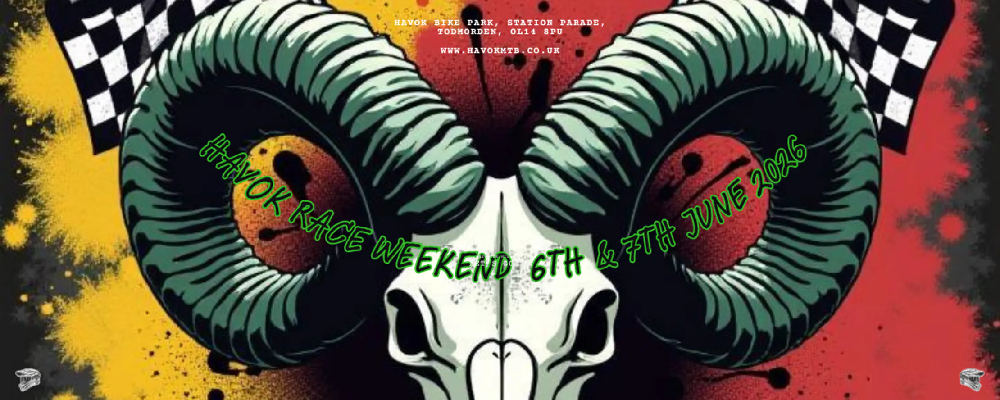

HAVOK X GRAYSTONE SUMMER FREERIDE CAMP!
Ready to take your freeride game to the next level? Join our two-day MTB Freeride
Summer
Camp
designed to build confidence, sharpen skills, and get you throwing some new tricks and level
up
your riding!
Beginners (Aug 6–7): For trail rippers ready to try their very first tricks.
Advanced (Aug 13–14): For riders already doing tricks and wanting to progress
further.
Two Action-Packed Days!
Day 1 (Graystone Action Sports, Manchester): Master flat skills, hit the foam
pit/resi, and
session the skatepark with BMX coach Rob Sidlow.
Day 2 (Havok Bikepark): Warm up with an uplift session on Havok's trails, then dial
in your
technique on the mulch jump and step-up with Sam Peel.
Cost: £85 | Camping: £10 at Havok | Plus, get an EXCLUSIVE DISCOUNT CODE for the Havok
Big
Weekender!
🔥 Strictly limited to 10 spots—grab yours now and make sure to select the correct dates at
checkout!
Click here for full event
details, ticket purchase! LIMITED SLOTS!

The Havok Big Weekender is back!
A full weekend of bikes, music, food and good times with good people!
15th & 16th August 2026
No pressure, no serious racing and no strict schedule - just everything that
makes Havok what it is.
Whether you're coming to ride all weekend, camp with your mates, watch the
action from the sidelines or simply see what Havok is all about,
everyone is welcome.
Throughout the weekend we will have music playing around the park, including
some sick DJ sets, alongside fantastic food from The Timber Cafe.
We'll also be welcoming a variety of our industry friends, including Loyal
Soldiers, with more to be announced in the coming weeks.
The Havok Big Weekender isn't just for the riders. Friends, family, spectators
and anyone who's curious about the park are encouraged
to come along! Grab something to eat, enjoy the atmosphere, watch some
incredible riding and experience the community that's grown around
Havok over the last few years.
Click here for
full event details, dates,
times and ticket purchase!

HAVOK SUMMER RACE WEEKEND!
Two days of racing, riding and unbeatable Havok atmosphere!
6th/7th June
2026
Our summer Race Weekend brings together the MTB community for a full weekend of
friendly
competition, progression and good times.
Saturday kicks off with the ever popular Mini Shredders Race for the next
generation of
riders aged 12 and under, while the older
riders can get their practice runs in for Sunday's Mates Race. Then Sunday it's
game on for
the Mates Race, where riders aged 12 and
over take to the track. You all know the deal by now, good riding, great food
and even
better company!
Click here for
full event details, dates,
times and ticket purchase!

HAVOK BIKE PARK SPRING JAM!
We're kicking off the 2026 season with the Havok Spring Jam, bringing everyone
together for
a full weekend of riding,
racing and good times!
Join us on Saturday 11th and Sunday 12th April 2026 for two full days of the
usual Havok
rowdiness!
Event Times:
10:00 - 18:00 both days
Weekend camping is available.
Please note that event details will continue to be updated as plans are
finalised. An
itinerary and confirmed
timings will be released soon. We'll also be sharing updates, announcements and
any new
additions across our social media channels,
so keep an eye out for the latest information.

The Havok Winter Road Rebuild TURKEY BURNER!
Hi everyone — Sam & Gem here from Havok Bike Park!
We would be incredibly grateful if you could take a few minutes to read an
update of our
current siutation regarding
the uplift road. As you all know, winter can take its toll on all sorts of
things, be it
buildings, vehicles, or in our case,
uplift roads. This park is a special place for the community and we work
tirelessly to keep
it that way, which
occasionally means we need to ask for help! Please visit the link below to find
out more on
this situation and find out how you
can help directly, and earn some truly awesome rewards as a HUGE thank you from
us for all
the continued support we get to make this happen for you guys!!
This event has now ended
Alongside this - we are STOKED to announce our mucky, cosy, mulled wine
filled
christmas event - the TURKEY BURNER!
Join us Dec 27th & 28th for a day of chilled vibes, mulled wine, crispy
tracks,
raffles and music at HAVOK! This is a fundraiser
event and all proceeds will go towards the rebuild of the uplift road linked
above!
Thank you so much for reading and your continued support, find out more as
ALWAYS on our
Insta!
Insta: instagram.com/havokbikepark
LEGENDS!

Thank you for all your support in 2025!
2025 was one of our best, most memorable years yet, geuninely all thanks you you
guys!
We've had some incredible events, met a bunch of awesome people and most
importantly,
had some INSANE fun!!! Whilst this wraps up
our 2025 season of events, we have some crazy ideas for 2026 that we cant WAIT
to share with
you. Keep your eyes on this page and our socials for more information on events
in 2026.
Thank you all SO much for your support, it's because of our community
that we can
grow and host these events and maintain this incredible park!
We truly hope you had as much fun as we did!
We're still open for shredding, but see you in 2026 for our next event!